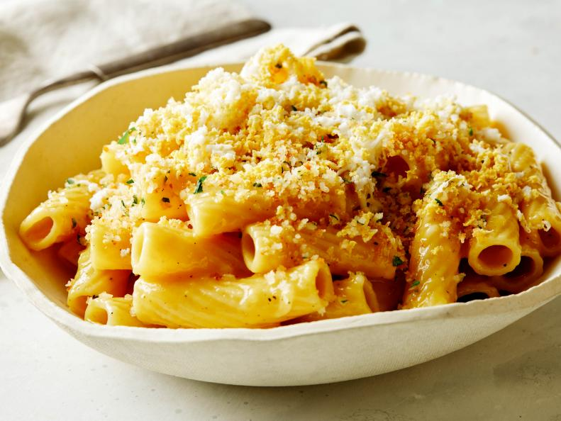

Cacio e uova

Description
Cacio e uova – translating to “cheese and eggs” in Italian – is a Neapolitan dish traditionally made with short, tubular pasta and a rich, creamy sauce. Like in carbonara, the sauce combines finely grated cheese, eggs and starchy pasta water, but eliminates the meaty guanciale or pancetta. While lard may commonly be used in cacio e uova, we opted instead for butter, resulting in a pantry-friendly vegetarian dish that comes together in minutes. Perfectly toasted breadcrumbs, Parmesan and finely chopped parsley add extra texture and flavor to the topping. In this amped-up version, we also add lemon zest for a hit of brightness then top it all off with finely grated hard-boiled eggs to emphasize the beautiful egg flavor and give the dish an unexpected fluffy texture.
Ingredients
- 2 large eggs and 1 large egg yolk, plus 2 more whole eggs for hard-boiling
- 1/2 cup finely grated Pecorino Romano
- 1/2 cup plus 2 tablespoons finely grated Parmesan
- Kosher salt and freshly ground black pepper
- 10 ounces rigatoni
- 3 tablespoons unsalted butter
- 1/4 cup panko
- 1/4 cup lightly packed parsley leaves, finely chopped (about 2 tablespoons chopped)
- 1 teaspoon finely grated lemon zest
- 3 cloves garlic, thinly sliced
Directions
- Whisk 2 of the eggs with the yolk, Pecorino Romano, 1/2 cup Parmesan, 1 tablespoon water, 1/2 teaspoon salt and several grinds of black pepper in a large bowl until smooth and well combined; set aside.
- Bring a large pot of water to a boil over medium-high heat and season the water generously with salt. Fill a medium bowl with ice water and set aside. Once the water is boiling, gently lower the remaining 2 whole eggs into the pot with a slotted spoon or tongs and cook until hard-boiled (the whites and yolks are firmly set), about 10 minutes. Transfer the eggs with the slotted spoon to the ice water, keeping the water in the pot boiling. Let the eggs cool completely, then peel and set aside.
- Add the rigatoni to the boiling water and cook until al dente according to the package directions. Reserve 1/2 cup of the pasta cooking water, then drain the rigatoni well and set aside.
- Meanwhile, melt 1 tablespoon of the butter in a large nonstick skillet over medium heat. Add the panko and cook, stirring frequently, until golden brown and toasted, about 5 minutes. Stir in the parsley, lemon zest and remaining 2 tablespoons Parmesan until combined. Transfer to a small bowl; set aside.
- Wipe out the skillet and add the remaining 2 tablespoons butter. Melt over medium-high heat, then add the garlic and cook, stirring occasionally, until just tender and fragrant, 1 to 2 minutes. Add the pasta and toss with a rubber spatula to combine. Lower the heat to medium-low. Pour in 1/4 cup of the reserved pasta water and the egg-cheese mixture. Cook, stirring continuously and scraping the bottom and sides of the skillet, until the cheese has melted and the sauce is silky and slightly thickened to coat the pasta nicely, 2 to 4 minutes. It’s important to turn the pasta frequently and scrape the skillet with a rubber spatula to ensure that the sauce cooks evenly and the eggs do not scramble. If the sauce is too thick, add more pasta water, 2 tablespoons at a time, to adjust the consistency. Taste and adjust the seasoning with salt and pepper. Spoon into 4 shallow bowls, then top evenly with the toasted panko. Finely grate the hard-boiled eggs on a rasp grater over the pasta.